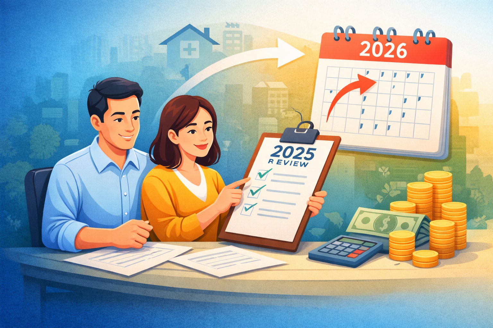

Why Looking Back Matters Before Planning Your Finances
Many people focus on setting new financial goals at the start of a year—saving more, investing better, or spending wisely. However, meaningful financial planning does not begin with the future. It begins with a thoughtful review of the past.
Looking back at your financial decisions helps you understand how prepared your household really is. It highlights what worked well, what caused stress, and where improvements are needed. This awareness forms the foundation for better financial choices in the year ahead.
Reviewing Your Major Financial Decisions
Start by reflecting on the key financial events of the year. Did you face any unexpected medical expenses, job changes, or large purchases? Were you able to arrange funds comfortably, or did it create pressure on your savings?
Insurance plays a crucial role during such moments. Reviewing whether your health or life insurance coverage was adequate can reveal gaps that need attention. If you made large commitments like buying a home or investing a significant amount, evaluate whether your assumptions and planning were realistic.
These reflections help you strengthen your financial preparedness rather than repeating the same challenges in the future.
Borrowing, Spending, and Unfinished Plans
Take a close look at your borrowings. Review outstanding loans, interest rates, and repayment commitments. Ask whether these loans helped build long-term assets or were primarily used for short-term needs.
It is equally important to revisit plans that did not materialise. Perhaps your savings did not increase as expected, investments were not reviewed, or important paperwork remained pending. Understanding why these plans were delayed helps you set more realistic expectations and seek support where needed.
Preparedness Matters More Than Predictions
Many investors end the year worrying about market forecasts and which asset class might perform best next. While predictions may seem tempting, they rarely improve long-term financial outcomes.
What truly makes a difference is how well your finances are structured—adequate insurance, manageable debt, disciplined savings, and investments aligned with your goals. These are factors within your control and far more reliable than market forecasts.
A year-end review builds awareness of your financial behaviour and responses. This awareness helps you plan with clarity, reduce stress, and make decisions that are aligned with your real-life needs.
Before planning ahead, take the time to look back. The insights you gain from your own experiences are often the most valuable tools for building long-term financial security.